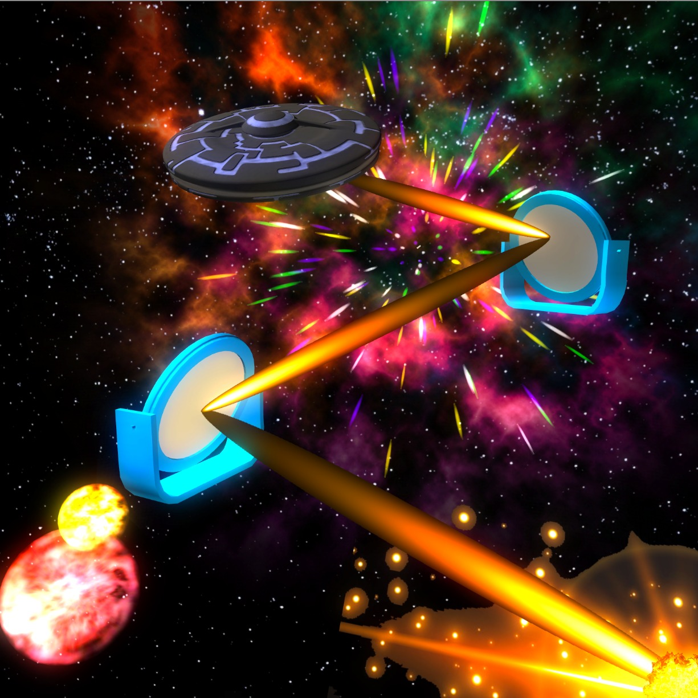
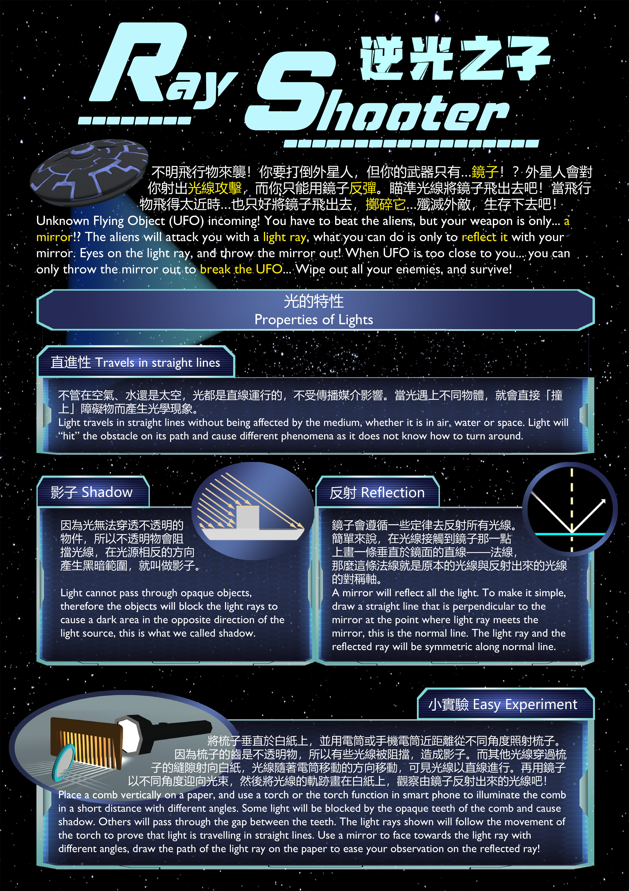
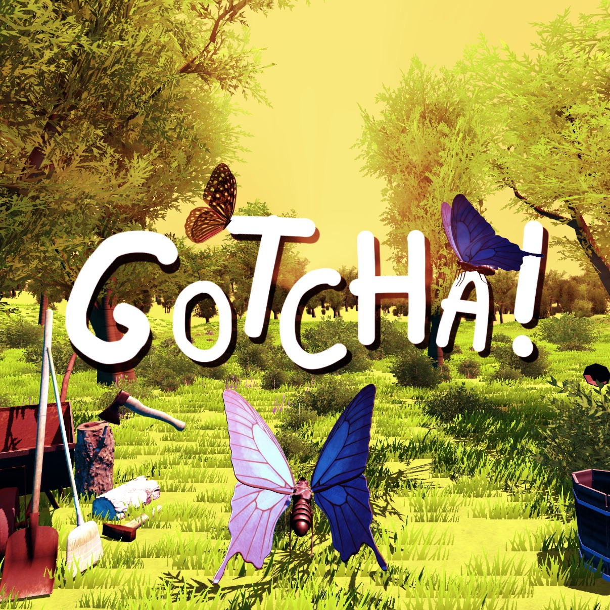
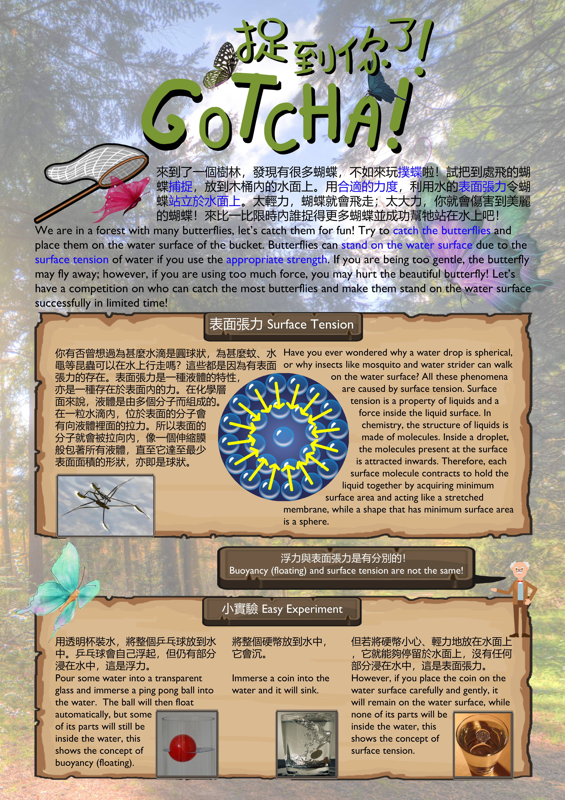

VR/AR Game Developer (Internship)
Versitech Limited is an organization that aims to promote and commercialize the research results obtained and technologies invented by professionals for public interests. I worked in the department of business development and professional services.
-
Developed 2 VR mini games for mobile platforms, namely Ray Shooter and Gotcha!, as an attraction point in a scientific exhibition.
- Aimed to present some simple scientific knowledge.
- Created accompanying posters to explain the scientific knowledge.
- The game plot, flow, and controls were kept simple to cater to the target audience of primary school students.
- Built a VR prototype that connected with a pulse rate sensor for the game.
Ray Shooter

Ray Shooter is a shooting game where players can destroy incoming UFOs and defend themselves from their attacks. The player's weapon is equipped with just a mirror. UFOs with aliens will approach the player from the front, left, and right. Aliens will attack the player with a light ray. Players must either reflect the light ray using the mirror or smash the UFOs with the mirror.
The game teaches some properties of light, such as the fact that light travels in straight lines, the causes of shadow, and reflections.

Gotcha!

Gotcha! is a leisure game with a nature theme, and its main objective is to catch butterflies and place them on the water's surface.
The poster for this game explains the concept of surface tension.

Exhibitions
InnoCarnival 2019
The two VR games were planned to be showcased in this public exhibition, providing educational entertainment to the audience. A poster was attached to explain the scientific knowledge involved in the games. However, the exhibition was cancelled due to a political issue.
For more details, you can refer to the website for InnoCarnival2018:
https://www.tto.hku.hk/event/innocarnival-2018
The VR Prototype
The prototype is used to validate the concept provided by the client. To simplify the process, a mini VR game was created that incorporates pulse rate detection using sensors.
Technical Components

Virtual Reality (VR)
Google VR is used to develop the VR scene with Google Cardboard / VR box.

Bluetooth Communication with Mi Band 3
Mi Band 3 is used as the pulse rate sensor for the prototype. Native Android Java code is used to handle the sensor, which is then converted and used as a Unity Android Plugin.